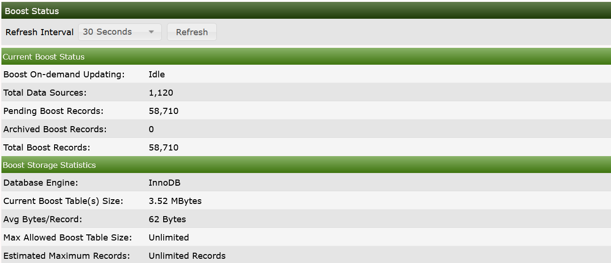
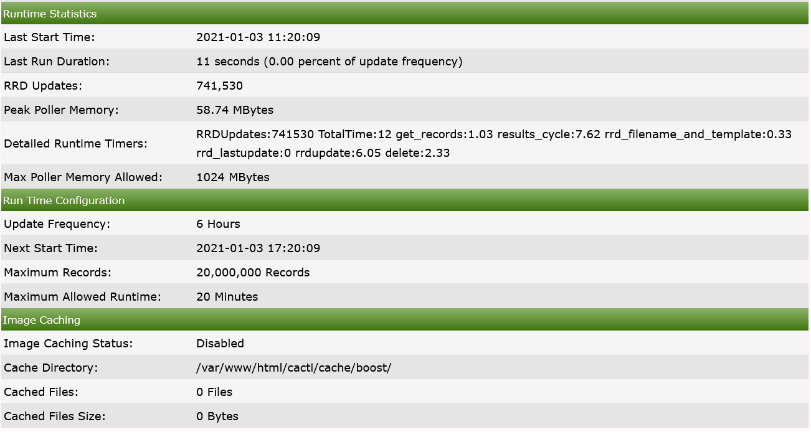
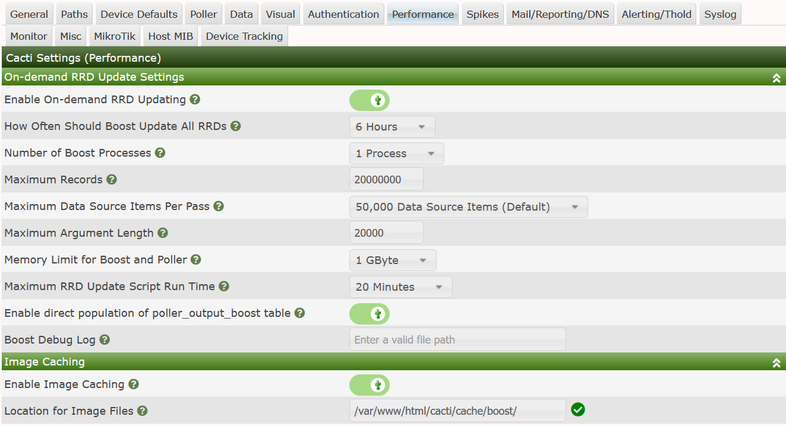

Cacti Performance Settings, formally known as boost are available to support very large Cacti installations, and are required for supporting the multiple Data Collector architecture that Cacti affords.
Designed years ago, Boosts intent was to reduce the the main data collectors cycle time by caching writes to disk, and those writes would be handled by an out of band process currently known as poller_boost.php.
Since these Large Sites had potentially well over one million Data Sources, there was previously no way to write all that data every 5 minutes. So, the buffering helped with maintaining a consistent run-time, and minimizing the user experience disruption from all that blocking Disk I/O.
In the modern Data Center, where we find an abundance of NVMe, Flash, and SSD's, the impact of all that I/O has been reduced. However, Boost now serves as a way to extend the life of your Flash media and therefore increase the availability of your Cacti server over its lifetime.
The Boost function in Cacti has several features that can be enabled or disabled on demand by the Cacti Administrator. They include:
In its initial design the Boost process leveraged MySQL Memory Tables to increase overall performance, and to reduce writing data to disk. This is still a valid case however, with improvements in InnoDB performance over the years combined with Flash storage, the need for using MySQL Memory Tables has diminished. In some cases, for example when using MariaDB Galera, or MySQL Master/Slave replication, it can not be used.
If you do wish to use Memory you have to pay close attention to the amount of data that will be cached in your design. You should periodically check that you have sufficient memory available to cache all the data in the Boost cache. The MySQL/MariaDB setting that controls the maximum size of a memory table is the max_heap_table_size setting in your /etc/my.cnf.d/server.cnf file.
To change the max_heap_table_size setting you require a restart of MySQL/MariaDB. So you won't want to make these changes often, as some systems have little time between mass updates to perform a restart. If you restart MySQL/MariaDB when the cache is full, you will lose those updates upon restart unless you first change the ENGINE of the Boost cache table to InnoDB or MyISAM before restarting.
When using Memory Tables you have to be cognizant of the maximum output width of the Cache table called poller_output_boost. By default, it's set to 512 bytes, which allows for very wide output from your Data Collectors. MySQL Memory Tables do not allow for variable sized columns in memory - which means if you write one byte to it, it will take 512 bytes. So, tuning this width is very important. That will be explained in more detail later on in this chapter.
To see how your system is configured, you can goto Console > Utilityes > System Utilities > View Boost Status option, when you go there, you will see an image similar to that below.

From this image, we can tell a few things:
Additionally, you can tell
From that Data, we know if we were to use a Memory Table, at present it's width could be say 100 Bytes and we could cut memory use by 80%.
We can also estimate from this interface, how large our max_heap_table_size would ultimately have to be, keeping in mind that the Current Boost Table Size is misleading since even though each record can be in excess of 512 bytes, it's presently only using 62 bytes of total storage per record.
In the image below, you can see runtime statistics, update frequencies, and Image Caching settings, which are currently disabled.

From this setup, you can see that mass RRDfile updates are only happening roughly every 6 hours to minimize wear and tear on the SSD storage in use.
To find and Enable the Boost settings, you first go to Console > Configuration > Settings > Performance. From this interface, in the image below, you can setup Boost.

As an exercise, lets look at a fictitious setup and determine what the max_heap_table_size should be. Let's say, for example, that your Cacti systems Poller Cache contains 200k rows, and the maximum length of any rows output is 20 bytes, about the size of a 64bit counter value.
If you are running scripts, ones that return very long results, like the MySQL statistics plugin, you should consider carefully the next step.
In this case, we will assume that even though the largest value returned is 20 bytes, we will elect to maintain a maximum output column width of 50 bytes.
The important thing here is that memory tables store the full size of the column, even though the column type is varchar(). By default it's varchar(512). Therefore, if your system only needs 50 bytes, you will have 90% waste in your poller_output_boost table.
The next step would me to modify the structure of your poller_output and poller_output_boost tables. You would do this by doing the following:
ALTER TABLE poller_output,
MODIFY column output varchar(50) NOT NULL default ""
ENGINE=memory;
ALTER TABLE poller_output_boost,
MODIFY column output varchar(50) NOT NULL default ""
ENGINE=memory;As previously mentioned, its also important that the poller_output table is converted to memory, eliminate any disk I/O related to poller updates.
Now, you need to determine how many polling cycles will fit into your poller_output_boost table. In this case, when sizing the poller_output_boost table, you take the output column width and add 34 bytes per record. So, in this case, each data source result to be stored in the poller_output_boost table would take 84bytes.
Then, with the Maximum Heap Table size in hand, and let's say the default is 16MBytes for the largest table (the MySQL default), you can calculate the number of poller intervals that you can store without running out of MySQL memory. So, let's take our example:
200k Cache Entries x 84 Bytes Per Poller Cache Row = 1,680,000 Bytes per Poll
This means that your poller_output_boost can handle 10 Cacti polling cycles, or roughly 4/5 of an hour of poller data before it must be cleared by the system.
As all things go, you should not want to take your system to the edge. So, it is best to increase the max_heap_table_size of your system to ensure you have buffer in cases where say for example, your disks become degraded over time and the Boost cycle is extended as a result.
But let's look at the problem a different way. Let's say that you wish to perform major updates every 4 hours. With a 50% memory reserve, we should plan for 6 hours of updates. This way, we need to have size for 72 poller cycles in your poller_output_boost table. This means that the max_heap_table_size must be at least 131,040,000 Bytes.
So, let's call it a deal. Provided you have enough memory, and I expect that you do, you would edit the /etc/my.cnf.d/server.cnf and add/modify the following line:
max_heap_table_size=132M
Then, save the file, and restart MySQL. Once this is done, you are ready to “enable” Boost as described above.
If you are planning on system maintenance if you are using MEMORY storage in MySQL or MariaDB, you should flush your Boost Cache before your system is taken offline for maintenance. To do this, you simply login to the Cacti system as root, and flush the Cache using the commands below
cd /var/www/html/cacti
php -q poller_boost.php --force
This operation will take several minutes to complete, at which time there will be additional records in the poller_output_boost table. So, it might be better that after the poller_boost.php process is complete, to modify the poller_output_boost table to InnoDB before reboot, and then convert it back to memory after they system maintenance is complete.
Copyright (c) 2004-2024 The Cacti Group